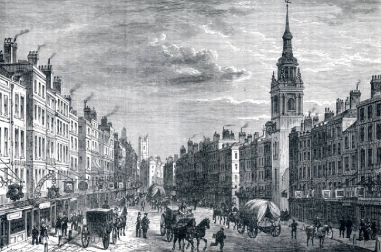
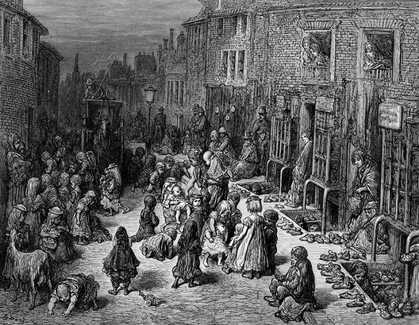

Inglaterra: "A Oficina do Mundo"
Século XIX, época de ascensão, revolução industrial e crescimento no mercado. A Inglaterra era o grande pilar da economia da época, financiou muitos países com seu discurso de livre comércio e ainda era a pioneira na revolução industrial das máquinas. Protagonista do mercado, os holofotes em seu nome, com a capital mais populosa do mundo antigo ou moderno! Nenhum outro país chegava aos seus pés. Mas é claro que esse crescimento acelerado viria com alguma consequência.
Londres - A Grande Capital
Londres finaliza o século XVIII com cerca de um milhão de habitantes e em 1851 alcança os 2,5 milhões de habitantes e terminaria o século XIX com mais de 5 milhões de habitantes, se tornando então a maior cidade do mundo e a grande capital do Império Britânico. Durante esse período, Londres se tornou uma capital global política, financeira e comercial. A cidade enriquecia a medida que seu Império expandia, mas além disso a miséria e a violência andavam lado a lado no protagonismo da cena urbana, onde milhões viviam em favelas superlotadas e pouco higiênicas e a insalubridade da cidade tomava proporções absurdas. Era impossível para uma capital naquela época suportar a superpopulação e o crescimento desordenado da indústria em uma harmonia perfeita.
É então que em livros como Oliver Twist por Charles Dickens ou London: a pilgrimage por William Blanchard Jerrold e Gustave Doré que vemos imortalizada a realidade vivida por aqueles cidadãos mais pobres nas favelas da cidade mostrando a real consequência social da Revolução Industrial. Podemos também citar as duas favelas mais notórias da época: St. Giles e East End. St. Giles , um nome que no século 19 já havia se tornado um termo comum como sinônimo de pobreza extrema. Infame desde meados do século 18, St. Giles era definida por suas prostitutas, lojas de gim, becos secretos onde os criminosos podiam se esconder e cortiços horrivelmente superlotados.
Enquanto East End foi uma prova do pior cenário da densidade populacional: condições insalubres e epidemia de doenças. A taxa de mortalidade infantil no bairro era de 20%, enquanto a expectativa de vida de um trabalhador era de apenas 19 anos. A doença mais séria nos bairros pobres era a tuberculose , até a cólera da década 1860, assim como o raquitismo, a escarlatina e a febre tifóide. A varíola era uma doença temida em Londres: houve epidemias em 1816–19, 1825–26, 1837–40, 1871 e 1881.
